DYC / JSC · 2024
Bylaws
Read the 2024 bylaws below. Choose a language, then scroll through the document.
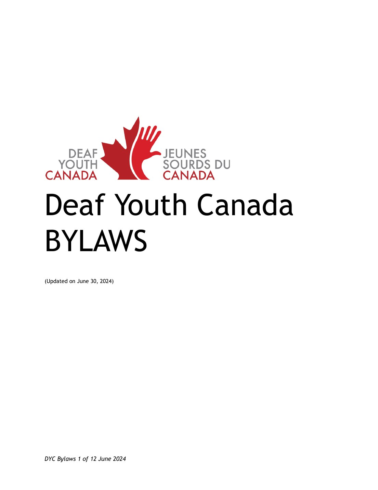
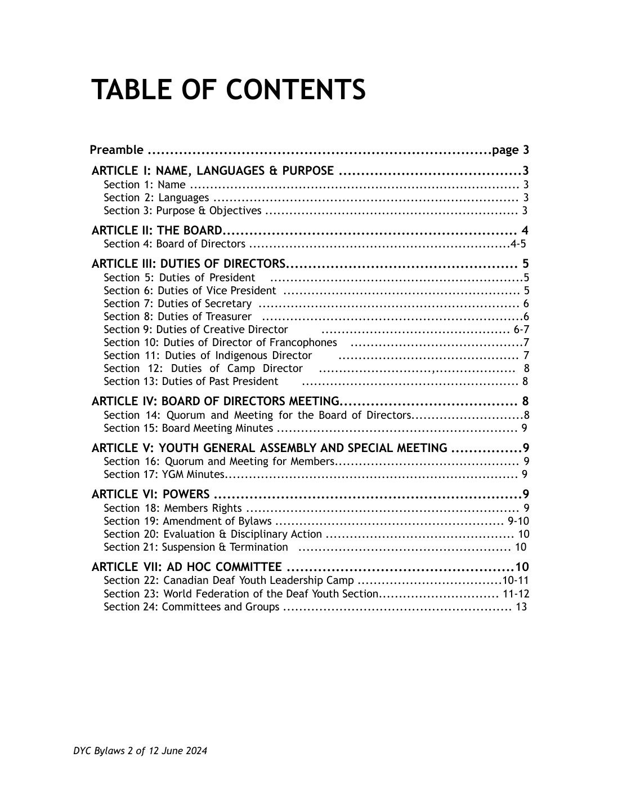
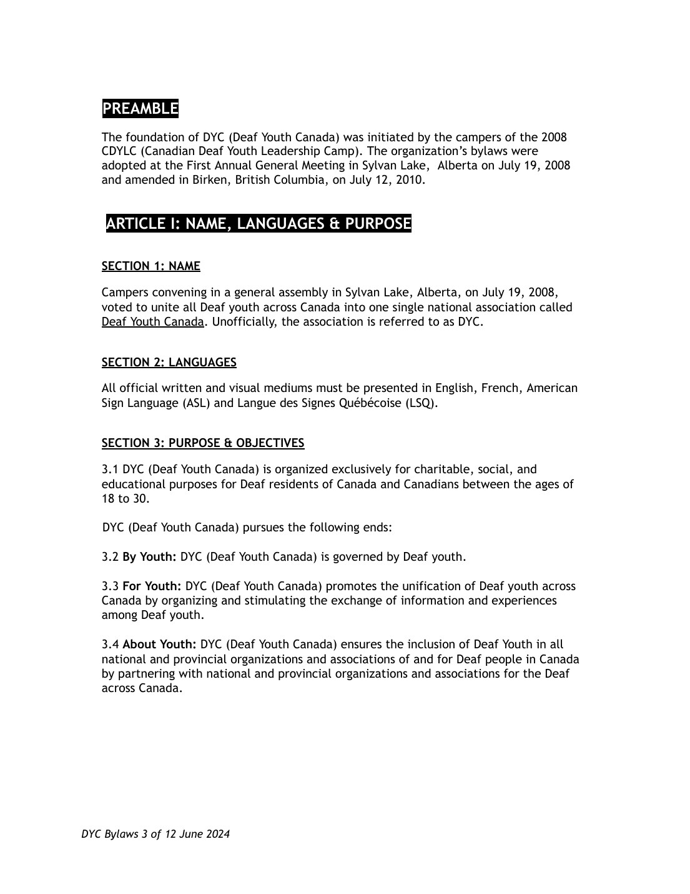
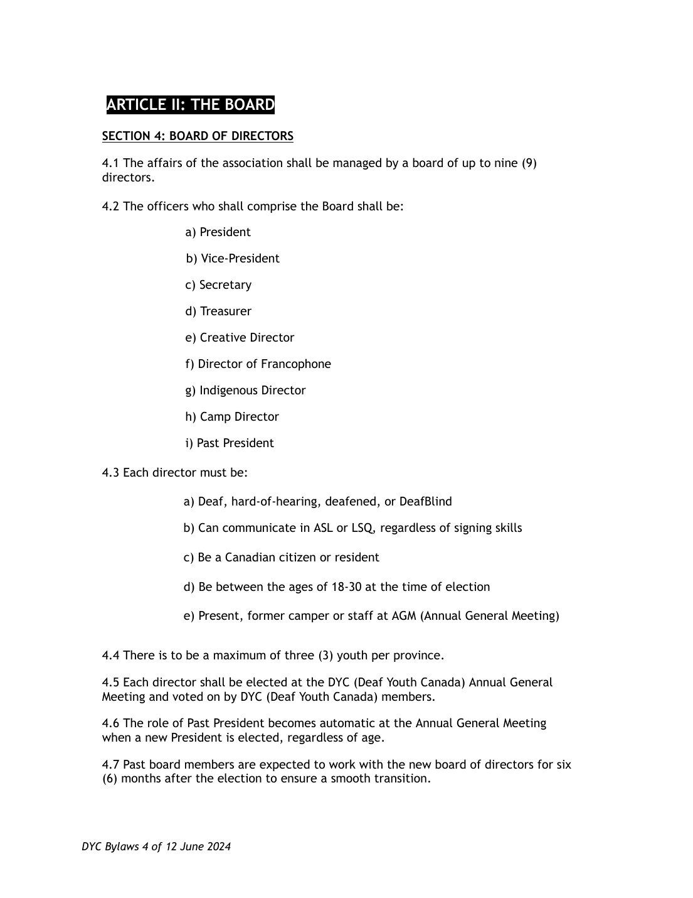
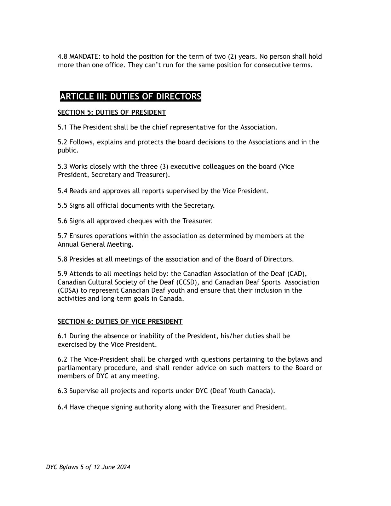
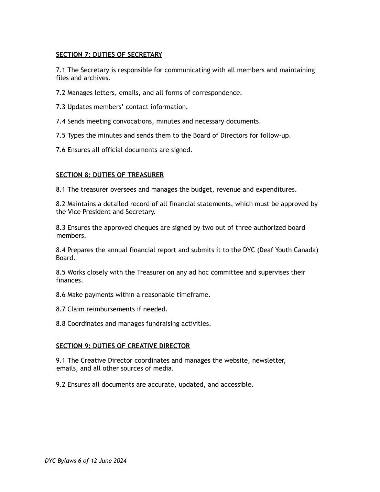
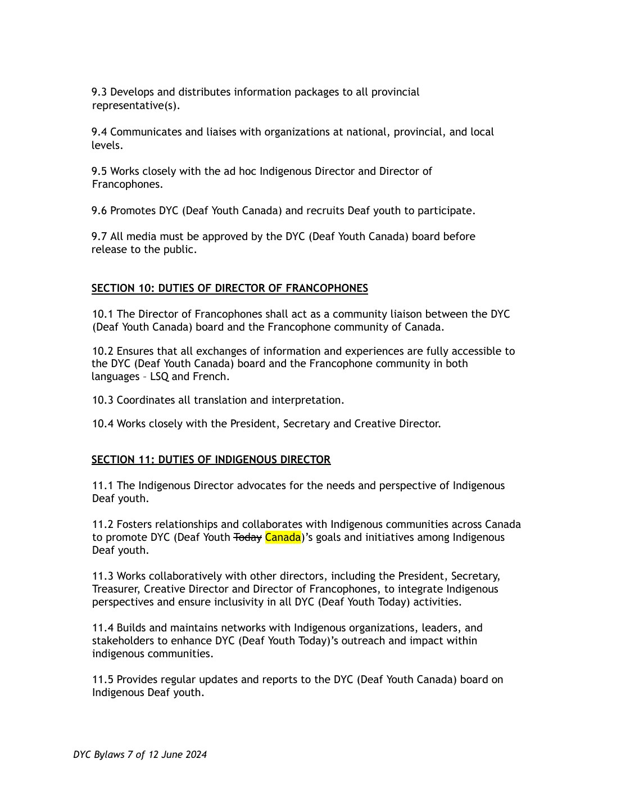
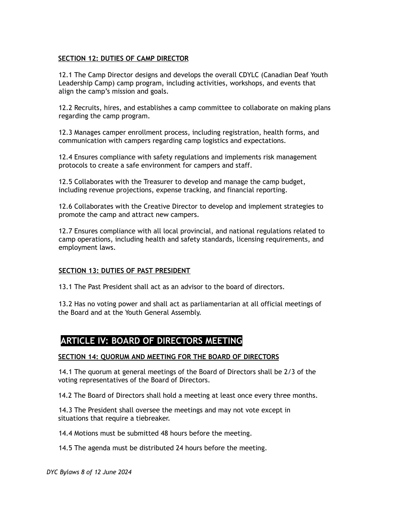
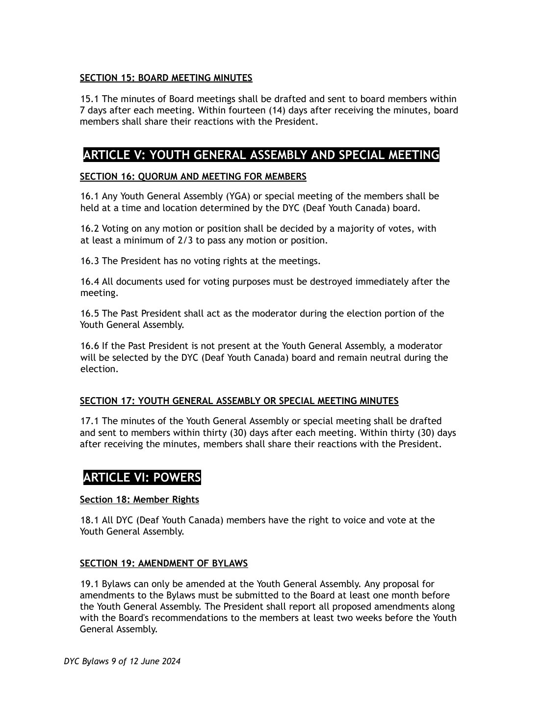
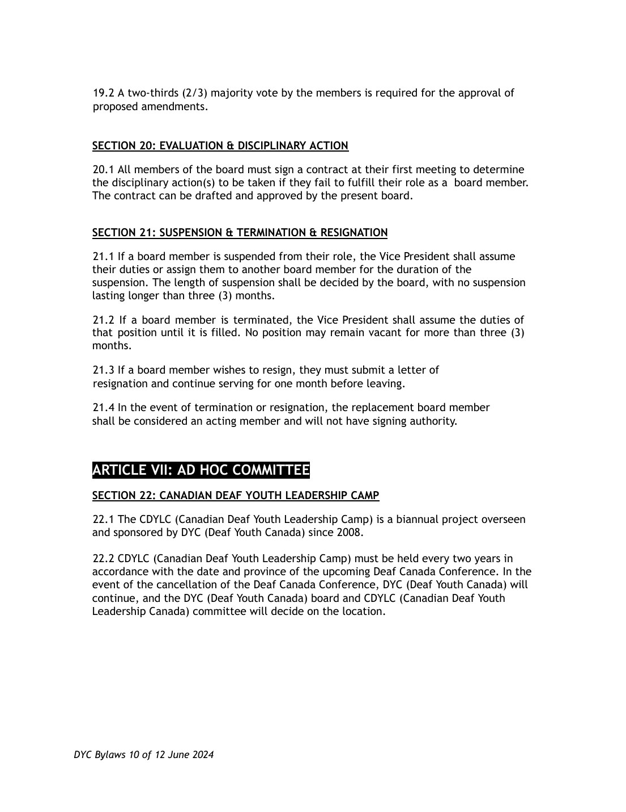
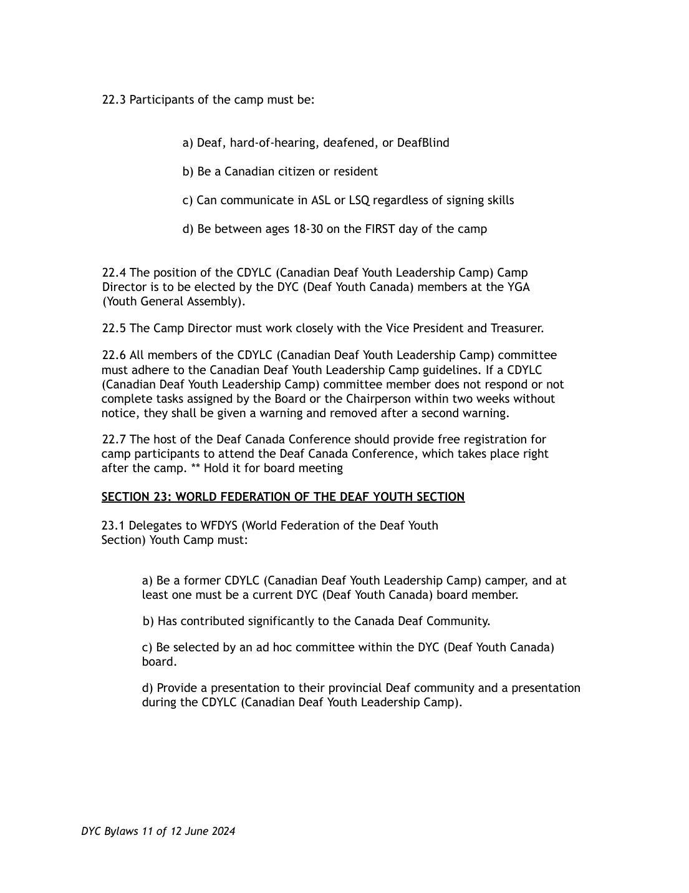
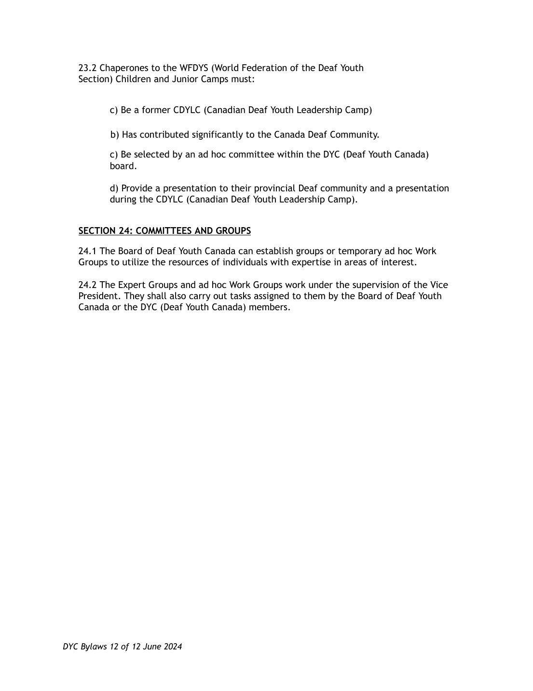
Read as text
Page 1
Deaf Youth Canada BYLAWS (Updated on June 30, 2024) DYC Bylaws 1 of 12 June 2024
Page 2
TABLE OF CONTENTS
Preamble .............................................................................page 3
ARTICLE I: NAME, LANGUAGES & PURPOSE .........................................3
Section 1: Name .................................................................................. 3
Section 2: Languages ............................................................................ 3
Section 3: Purpose & Objectives ............................................................... 3
ARTICLE II: THE BOARD.................................................................. 4
Section 4: Board of Directors .................................................................4-5
ARTICLE III: DUTIES OF DIRECTORS.................................................... 5
Section 5: Duties of President ...............................................................5
Section 6: Duties of Vice President ........................................................... 5
Section 7: Duties of Secretary ................................................................. 6
Section 8: Duties of Treasurer .................................................................6
Section 9: Duties of Creative Director ............................................... 6-7
Section 10: Duties of Director of Francophones ...........................................7
Section 11: Duties of Indigenous Director ............................................. 7
Section 12: Duties of Camp Director ............................,.................... 8
Section 13: Duties of Past President ...................................................... 8
ARTICLE IV: BOARD OF DIRECTORS MEETING........................................ 8
Section 14: Quorum and Meeting for the Board of Directors............................8
Section 15: Board Meeting Minutes ............................................................ 9
ARTICLE V: YOUTH GENERAL ASSEMBLY AND SPECIAL MEETING ................9
Section 16: Quorum and Meeting for Members.............................................. 9
Section 17: YGM Minutes......................................................................... 9
ARTICLE VI: POWERS .....................................................................9
Section 18: Members Rights .................................................................... 9
Section 19: Amendment of Bylaws ......................................................... 9-10
Section 20: Evaluation & Disciplinary Action ............................................... 10
Section 21: Suspension & Termination ..................................................... 10
ARTICLE VII: AD HOC COMMITTEE ...................................................10
Section 22: Canadian Deaf Youth Leadership Camp ....................................10-11
Section 23: World Federation of the Deaf Youth Section.............................. 11-12
Section 24: Committees and Groups ......................................................... 13
DYC Bylaws 2 of 12 June 2024
Page 3
PREAMBLE
The foundation of DYC (Deaf Youth Canada) was initiated by the campers of the 2008
CDYLC (Canadian Deaf Youth Leadership Camp). The organization’s bylaws were
adopted at the First Annual General Meeting in Sylvan Lake, Alberta on July 19, 2008
and amended in Birken, British Columbia, on July 12, 2010.
ARTICLE I: NAME, LANGUAGES & PURPOSE
SECTION 1: NAME
Campers convening in a general assembly in Sylvan Lake, Alberta, on July 19, 2008,
voted to unite all Deaf youth across Canada into one single national association called
Deaf Youth Canada. Unofficially, the association is referred to as DYC.
SECTION 2: LANGUAGES
All official written and visual mediums must be presented in English, French, American
Sign Language (ASL) and Langue des Signes Québécoise (LSQ).
SECTION 3: PURPOSE & OBJECTIVES
3.1 DYC (Deaf Youth Canada) is organized exclusively for charitable, social, and
educational purposes for Deaf residents of Canada and Canadians between the ages of
18 to 30.
DYC (Deaf Youth Canada) pursues the following ends:
3.2 By Youth: DYC (Deaf Youth Canada) is governed by Deaf youth.
3.3 For Youth: DYC (Deaf Youth Canada) promotes the unification of Deaf youth across
Canada by organizing and stimulating the exchange of information and experiences
among Deaf youth.
3.4 About Youth: DYC (Deaf Youth Canada) ensures the inclusion of Deaf Youth in all
national and provincial organizations and associations of and for Deaf people in Canada
by partnering with national and provincial organizations and associations for the Deaf
across Canada.
DYC Bylaws 3 of 12 June 2024
Page 4
ARTICLE II: THE BOARD
SECTION 4: BOARD OF DIRECTORS
4.1 The affairs of the association shall be managed by a board of up to nine (9)
directors.
4.2 The officers who shall comprise the Board shall be:
a) President
b) Vice-President
c) Secretary
d) Treasurer
e) Creative Director
f) Director of Francophone
g) Indigenous Director
h) Camp Director
i) Past President
4.3 Each director must be:
a) Deaf, hard-of-hearing, deafened, or DeafBlind
b) Can communicate in ASL or LSQ, regardless of signing skills
c) Be a Canadian citizen or resident
d) Be between the ages of 18-30 at the time of election
e) Present, former camper or staff at AGM (Annual General Meeting)
4.4 There is to be a maximum of three (3) youth per province.
4.5 Each director shall be elected at the DYC (Deaf Youth Canada) Annual General
Meeting and voted on by DYC (Deaf Youth Canada) members.
4.6 The role of Past President becomes automatic at the Annual General Meeting
when a new President is elected, regardless of age.
4.7 Past board members are expected to work with the new board of directors for six
(6) months after the election to ensure a smooth transition.
DYC Bylaws 4 of 12 June 2024
Page 5
4.8 MANDATE: to hold the position for the term of two (2) years. No person shall hold
more than one office. They can’t run for the same position for consecutive terms.
ARTICLE III: DUTIES OF DIRECTORS
SECTION 5: DUTIES OF PRESIDENT
5.1 The President shall be the chief representative for the Association.
5.2 Follows, explains and protects the board decisions to the Associations and in the
public.
5.3 Works closely with the three (3) executive colleagues on the board (Vice
President, Secretary and Treasurer).
5.4 Reads and approves all reports supervised by the Vice President.
5.5 Signs all official documents with the Secretary.
5.6 Signs all approved cheques with the Treasurer.
5.7 Ensures operations within the association as determined by members at the
Annual General Meeting.
5.8 Presides at all meetings of the association and of the Board of Directors.
5.9 Attends to all meetings held by: the Canadian Association of the Deaf (CAD),
Canadian Cultural Society of the Deaf (CCSD), and Canadian Deaf Sports Association
(CDSA) to represent Canadian Deaf youth and ensure that their inclusion in the
activities and long–term goals in Canada.
SECTION 6: DUTIES OF VICE PRESIDENT
6.1 During the absence or inability of the President, his/her duties shall be
exercised by the Vice President.
6.2 The Vice-President shall be charged with questions pertaining to the bylaws and
parliamentary procedure, and shall render advice on such matters to the Board or
members of DYC at any meeting.
6.3 Supervise all projects and reports under DYC (Deaf Youth Canada).
6.4 Have cheque signing authority along with the Treasurer and President.
DYC Bylaws 5 of 12 June 2024
Page 6
SECTION 7: DUTIES OF SECRETARY 7.1 The Secretary is responsible for communicating with all members and maintaining files and archives. 7.2 Manages letters, emails, and all forms of correspondence. 7.3 Updates members’ contact information. 7.4 Sends meeting convocations, minutes and necessary documents. 7.5 Types the minutes and sends them to the Board of Directors for follow-up. 7.6 Ensures all official documents are signed. SECTION 8: DUTIES OF TREASURER 8.1 The treasurer oversees and manages the budget, revenue and expenditures. 8.2 Maintains a detailed record of all financial statements, which must be approved by the Vice President and Secretary. 8.3 Ensures the approved cheques are signed by two out of three authorized board members. 8.4 Prepares the annual financial report and submits it to the DYC (Deaf Youth Canada) Board. 8.5 Works closely with the Treasurer on any ad hoc committee and supervises their finances. 8.6 Make payments within a reasonable timeframe. 8.7 Claim reimbursements if needed. 8.8 Coordinates and manages fundraising activities. SECTION 9: DUTIES OF CREATIVE DIRECTOR 9.1 The Creative Director coordinates and manages the website, newsletter, emails, and all other sources of media. 9.2 Ensures all documents are accurate, updated, and accessible. DYC Bylaws 6 of 12 June 2024
Page 7
9.3 Develops and distributes information packages to all provincial representative(s). 9.4 Communicates and liaises with organizations at national, provincial, and local levels. 9.5 Works closely with the ad hoc Indigenous Director and Director of Francophones. 9.6 Promotes DYC (Deaf Youth Canada) and recruits Deaf youth to participate. 9.7 All media must be approved by the DYC (Deaf Youth Canada) board before release to the public. SECTION 10: DUTIES OF DIRECTOR OF FRANCOPHONES 10.1 The Director of Francophones shall act as a community liaison between the DYC (Deaf Youth Canada) board and the Francophone community of Canada. 10.2 Ensures that all exchanges of information and experiences are fully accessible to the DYC (Deaf Youth Canada) board and the Francophone community in both languages – LSQ and French. 10.3 Coordinates all translation and interpretation. 10.4 Works closely with the President, Secretary and Creative Director. SECTION 11: DUTIES OF INDIGENOUS DIRECTOR 11.1 The Indigenous Director advocates for the needs and perspective of Indigenous Deaf youth. 11.2 Fosters relationships and collaborates with Indigenous communities across Canada to promote DYC (Deaf Youth Today Canada)’s goals and initiatives among Indigenous Deaf youth. 11.3 Works collaboratively with other directors, including the President, Secretary, Treasurer, Creative Director and Director of Francophones, to integrate Indigenous perspectives and ensure inclusivity in all DYC (Deaf Youth Today) activities. 11.4 Builds and maintains networks with Indigenous organizations, leaders, and stakeholders to enhance DYC (Deaf Youth Today)’s outreach and impact within indigenous communities. 11.5 Provides regular updates and reports to the DYC (Deaf Youth Canada) board on Indigenous Deaf youth. DYC Bylaws 7 of 12 June 2024
Page 8
SECTION 12: DUTIES OF CAMP DIRECTOR
12.1 The Camp Director designs and develops the overall CDYLC (Canadian Deaf Youth
Leadership Camp) camp program, including activities, workshops, and events that
align the camp’s mission and goals.
12.2 Recruits, hires, and establishes a camp committee to collaborate on making plans
regarding the camp program.
12.3 Manages camper enrollment process, including registration, health forms, and
communication with campers regarding camp logistics and expectations.
12.4 Ensures compliance with safety regulations and implements risk management
protocols to create a safe environment for campers and staff.
12.5 Collaborates with the Treasurer to develop and manage the camp budget,
including revenue projections, expense tracking, and financial reporting.
12.6 Collaborates with the Creative Director to develop and implement strategies to
promote the camp and attract new campers.
12.7 Ensures compliance with all local provincial, and national regulations related to
camp operations, including health and safety standards, licensing requirements, and
employment laws.
SECTION 13: DUTIES OF PAST PRESIDENT
13.1 The Past President shall act as an advisor to the board of directors.
13.2 Has no voting power and shall act as parliamentarian at all official meetings of
the Board and at the Youth General Assembly.
ARTICLE IV: BOARD OF DIRECTORS MEETING
SECTION 14: QUORUM AND MEETING FOR THE BOARD OF DIRECTORS
14.1 The quorum at general meetings of the Board of Directors shall be 2/3 of the
voting representatives of the Board of Directors.
14.2 The Board of Directors shall hold a meeting at least once every three months.
14.3 The President shall oversee the meetings and may not vote except in
situations that require a tiebreaker.
14.4 Motions must be submitted 48 hours before the meeting.
14.5 The agenda must be distributed 24 hours before the meeting.
DYC Bylaws 8 of 12 June 2024
Page 9
SECTION 15: BOARD MEETING MINUTES
15.1 The minutes of Board meetings shall be drafted and sent to board members within
7 days after each meeting. Within fourteen (14) days after receiving the minutes, board
members shall share their reactions with the President.
ARTICLE V: YOUTH GENERAL ASSEMBLY AND SPECIAL MEETING
SECTION 16: QUORUM AND MEETING FOR MEMBERS
16.1 Any Youth General Assembly (YGA) or special meeting of the members shall be
held at a time and location determined by the DYC (Deaf Youth Canada) board.
16.2 Voting on any motion or position shall be decided by a majority of votes, with
at least a minimum of 2/3 to pass any motion or position.
16.3 The President has no voting rights at the meetings.
16.4 All documents used for voting purposes must be destroyed immediately after the
meeting.
16.5 The Past President shall act as the moderator during the election portion of the
Youth General Assembly.
16.6 If the Past President is not present at the Youth General Assembly, a moderator
will be selected by the DYC (Deaf Youth Canada) board and remain neutral during the
election.
SECTION 17: YOUTH GENERAL ASSEMBLY OR SPECIAL MEETING MINUTES
17.1 The minutes of the Youth General Assembly or special meeting shall be drafted
and sent to members within thirty (30) days after each meeting. Within thirty (30) days
after receiving the minutes, members shall share their reactions with the President.
ARTICLE VI: POWERS
Section 18: Member Rights
18.1 All DYC (Deaf Youth Canada) members have the right to voice and vote at the
Youth General Assembly.
SECTION 19: AMENDMENT OF BYLAWS
19.1 Bylaws can only be amended at the Youth General Assembly. Any proposal for
amendments to the Bylaws must be submitted to the Board at least one month before
the Youth General Assembly. The President shall report all proposed amendments along
with the Board's recommendations to the members at least two weeks before the Youth
General Assembly.
DYC Bylaws 9 of 12 June 2024
Page 10
19.2 A two-thirds (2/3) majority vote by the members is required for the approval of proposed amendments. SECTION 20: EVALUATION & DISCIPLINARY ACTION 20.1 All members of the board must sign a contract at their first meeting to determine the disciplinary action(s) to be taken if they fail to fulfill their role as a board member. The contract can be drafted and approved by the present board. SECTION 21: SUSPENSION & TERMINATION & RESIGNATION 21.1 If a board member is suspended from their role, the Vice President shall assume their duties or assign them to another board member for the duration of the suspension. The length of suspension shall be decided by the board, with no suspension lasting longer than three (3) months. 21.2 If a board member is terminated, the Vice President shall assume the duties of that position until it is filled. No position may remain vacant for more than three (3) months. 21.3 If a board member wishes to resign, they must submit a letter of resignation and continue serving for one month before leaving. 21.4 In the event of termination or resignation, the replacement board member shall be considered an acting member and will not have signing authority. ARTICLE VII: AD HOC COMMITTEE SECTION 22: CANADIAN DEAF YOUTH LEADERSHIP CAMP 22.1 The CDYLC (Canadian Deaf Youth Leadership Camp) is a biannual project overseen and sponsored by DYC (Deaf Youth Canada) since 2008. 22.2 CDYLC (Canadian Deaf Youth Leadership Camp) must be held every two years in accordance with the date and province of the upcoming Deaf Canada Conference. In the event of the cancellation of the Deaf Canada Conference, DYC (Deaf Youth Canada) will continue, and the DYC (Deaf Youth Canada) board and CDYLC (Canadian Deaf Youth Leadership Canada) committee will decide on the location. DYC Bylaws 10 of 12 June 2024
Page 11
22.3 Participants of the camp must be:
a) Deaf, hard-of-hearing, deafened, or DeafBlind
b) Be a Canadian citizen or resident
c) Can communicate in ASL or LSQ regardless of signing skills
d) Be between ages 18-30 on the FIRST day of the camp
22.4 The position of the CDYLC (Canadian Deaf Youth Leadership Camp) Camp
Director is to be elected by the DYC (Deaf Youth Canada) members at the YGA
(Youth General Assembly).
22.5 The Camp Director must work closely with the Vice President and Treasurer.
22.6 All members of the CDYLC (Canadian Deaf Youth Leadership Camp) committee
must adhere to the Canadian Deaf Youth Leadership Camp guidelines. If a CDYLC
(Canadian Deaf Youth Leadership Camp) committee member does not respond or not
complete tasks assigned by the Board or the Chairperson within two weeks without
notice, they shall be given a warning and removed after a second warning.
22.7 The host of the Deaf Canada Conference should provide free registration for
camp participants to attend the Deaf Canada Conference, which takes place right
after the camp. ** Hold it for board meeting
SECTION 23: WORLD FEDERATION OF THE DEAF YOUTH SECTION
23.1 Delegates to WFDYS (World Federation of the Deaf Youth
Section) Youth Camp must:
a) Be a former CDYLC (Canadian Deaf Youth Leadership Camp) camper, and at
least one must be a current DYC (Deaf Youth Canada) board member.
b) Has contributed significantly to the Canada Deaf Community.
c) Be selected by an ad hoc committee within the DYC (Deaf Youth Canada)
board.
d) Provide a presentation to their provincial Deaf community and a presentation
during the CDYLC (Canadian Deaf Youth Leadership Camp).
DYC Bylaws 11 of 12 June 2024
Page 12
23.2 Chaperones to the WFDYS (World Federation of the Deaf Youth
Section) Children and Junior Camps must:
c) Be a former CDYLC (Canadian Deaf Youth Leadership Camp)
b) Has contributed significantly to the Canada Deaf Community.
c) Be selected by an ad hoc committee within the DYC (Deaf Youth Canada)
board.
d) Provide a presentation to their provincial Deaf community and a presentation
during the CDYLC (Canadian Deaf Youth Leadership Camp).
SECTION 24: COMMITTEES AND GROUPS
24.1 The Board of Deaf Youth Canada can establish groups or temporary ad hoc Work
Groups to utilize the resources of individuals with expertise in areas of interest.
24.2 The Expert Groups and ad hoc Work Groups work under the supervision of the Vice
President. They shall also carry out tasks assigned to them by the Board of Deaf Youth
Canada or the DYC (Deaf Youth Canada) members.
DYC Bylaws 12 of 12 June 2024
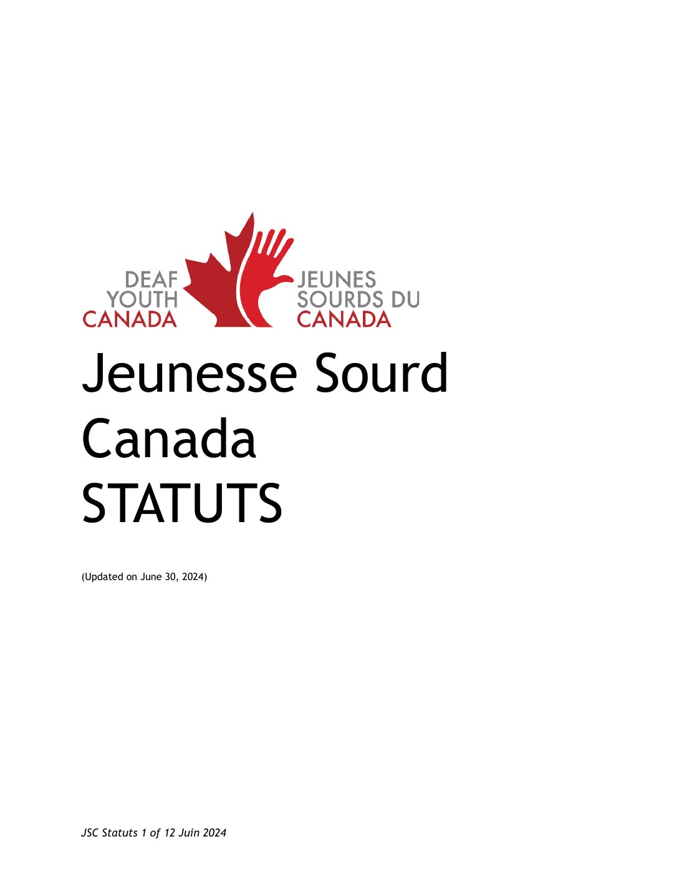
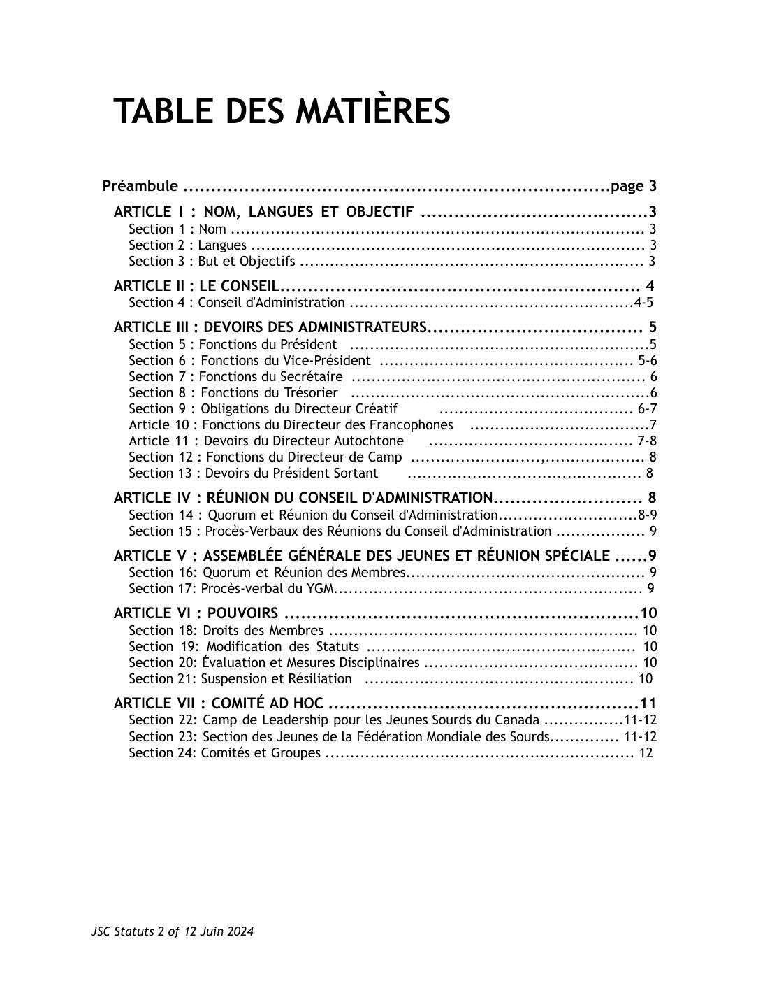
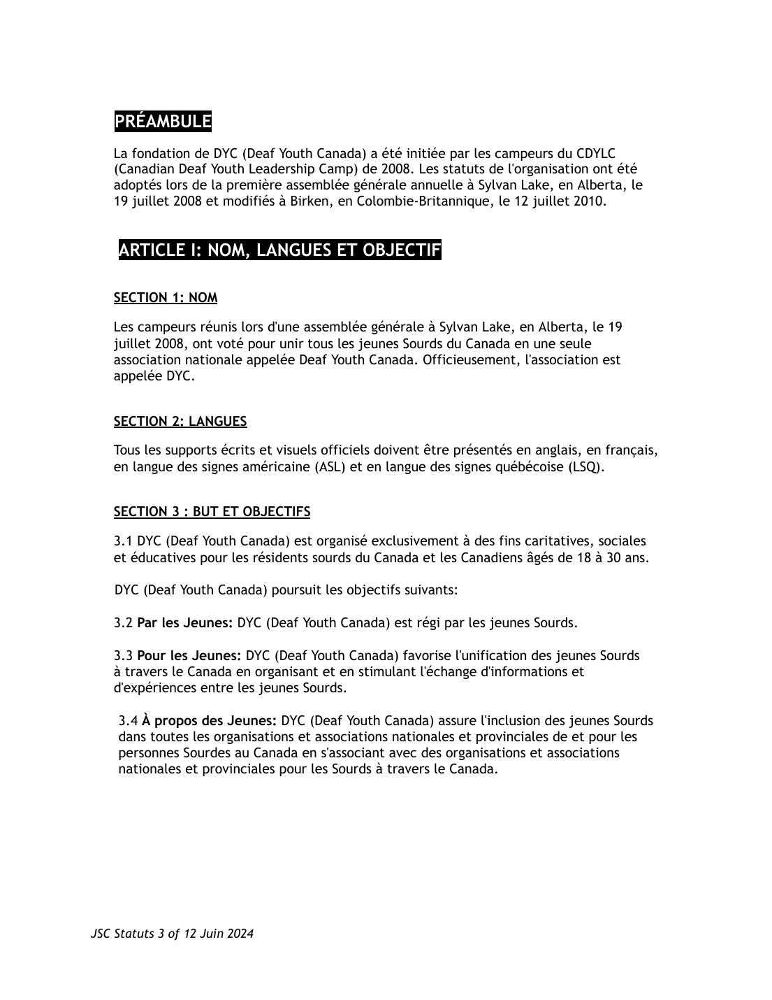
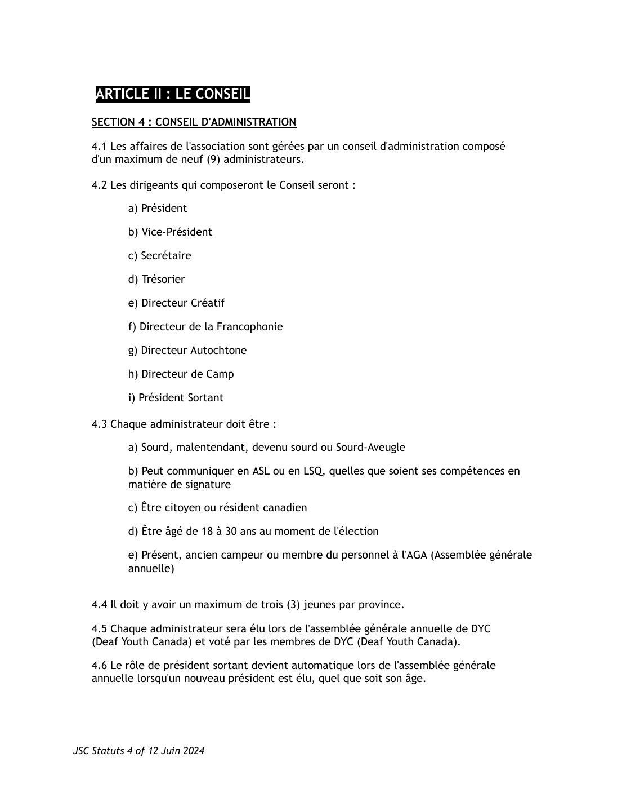
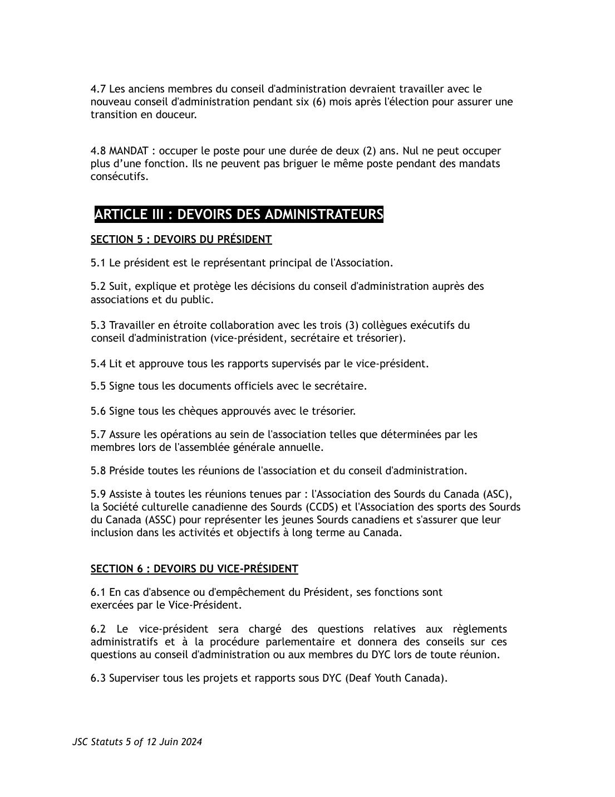
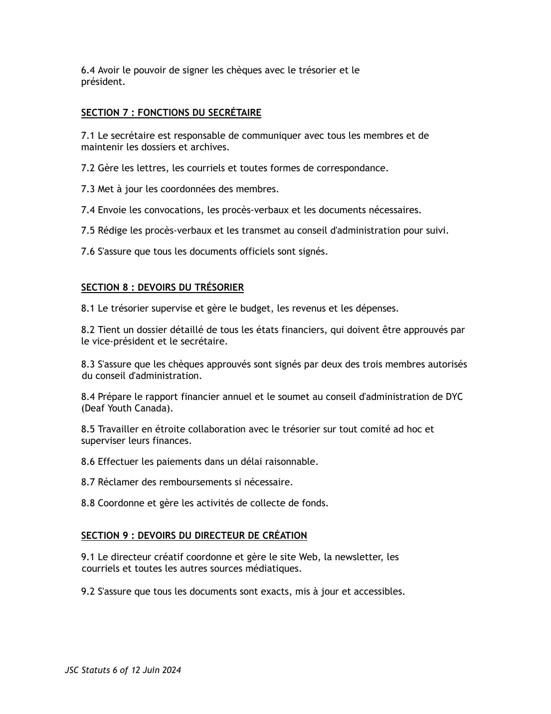
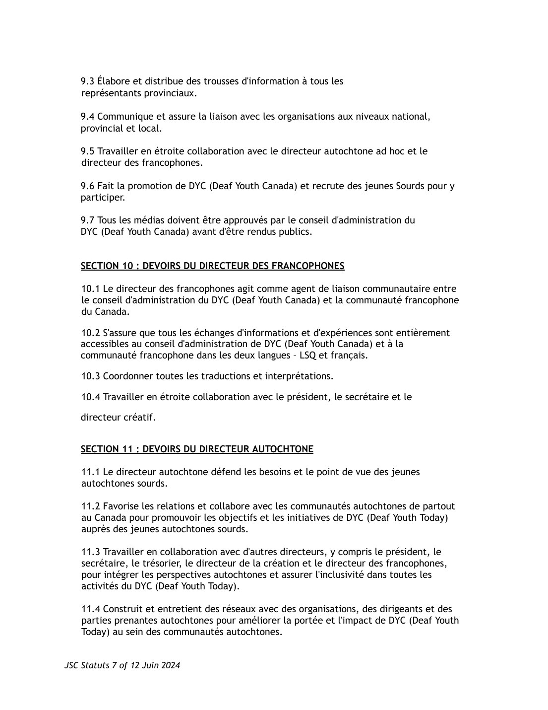
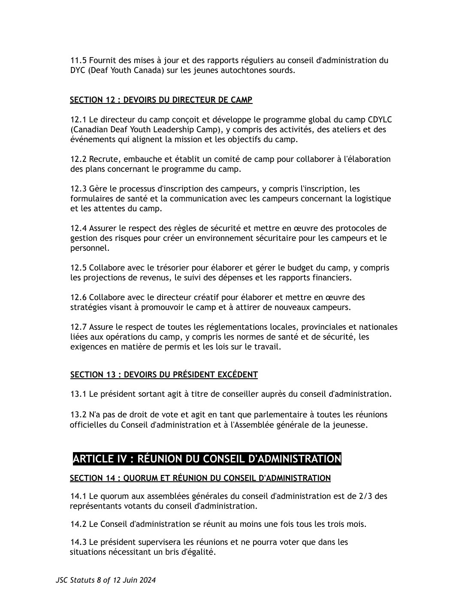
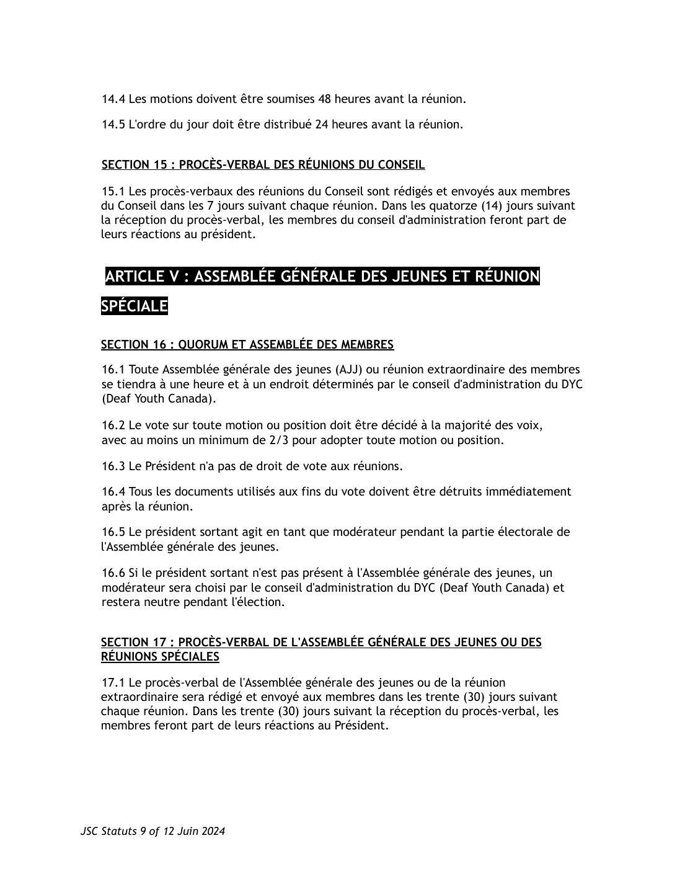
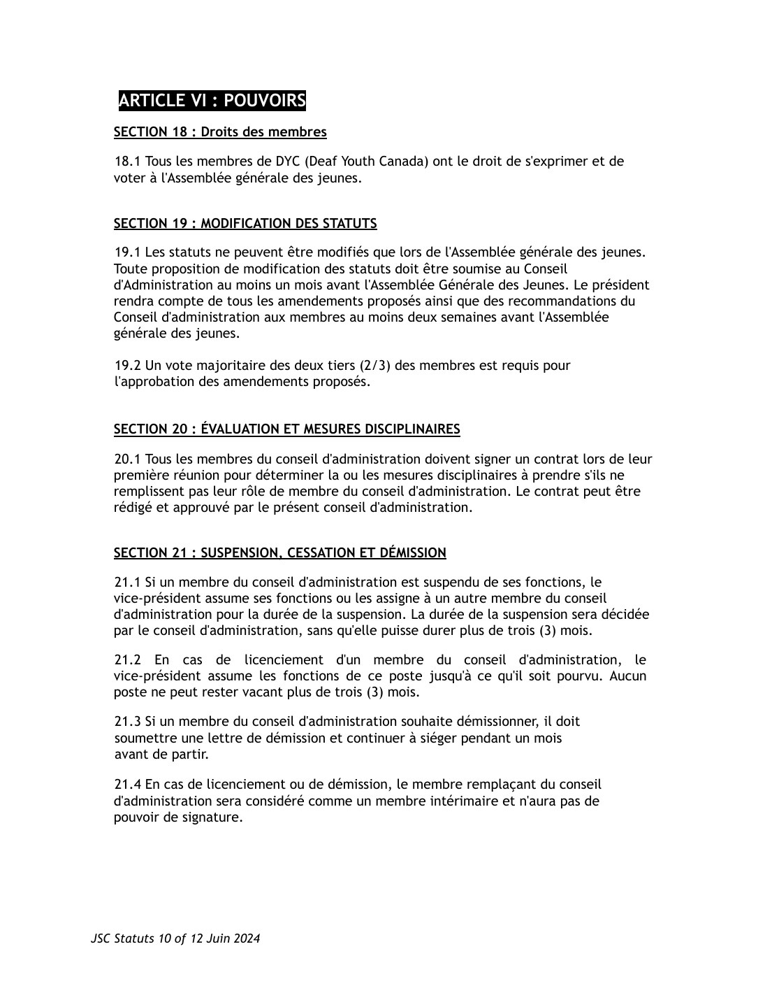
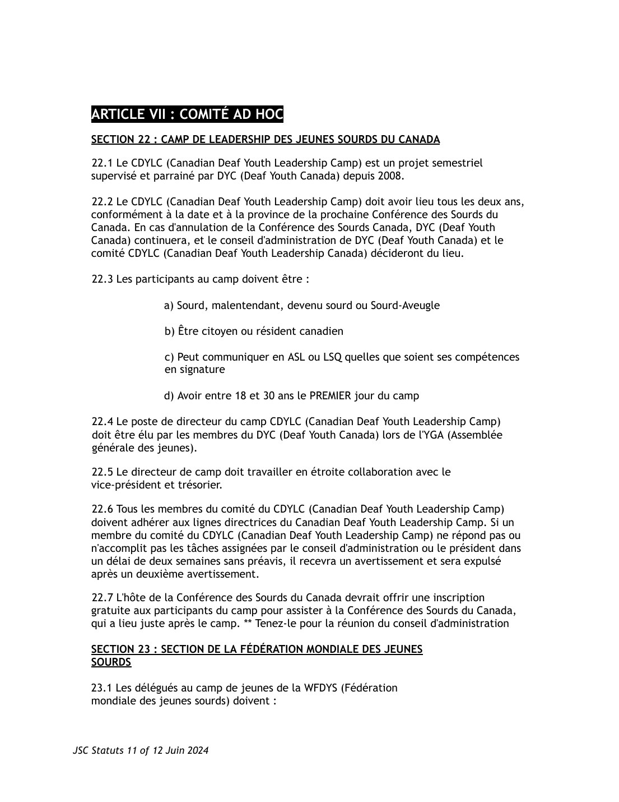
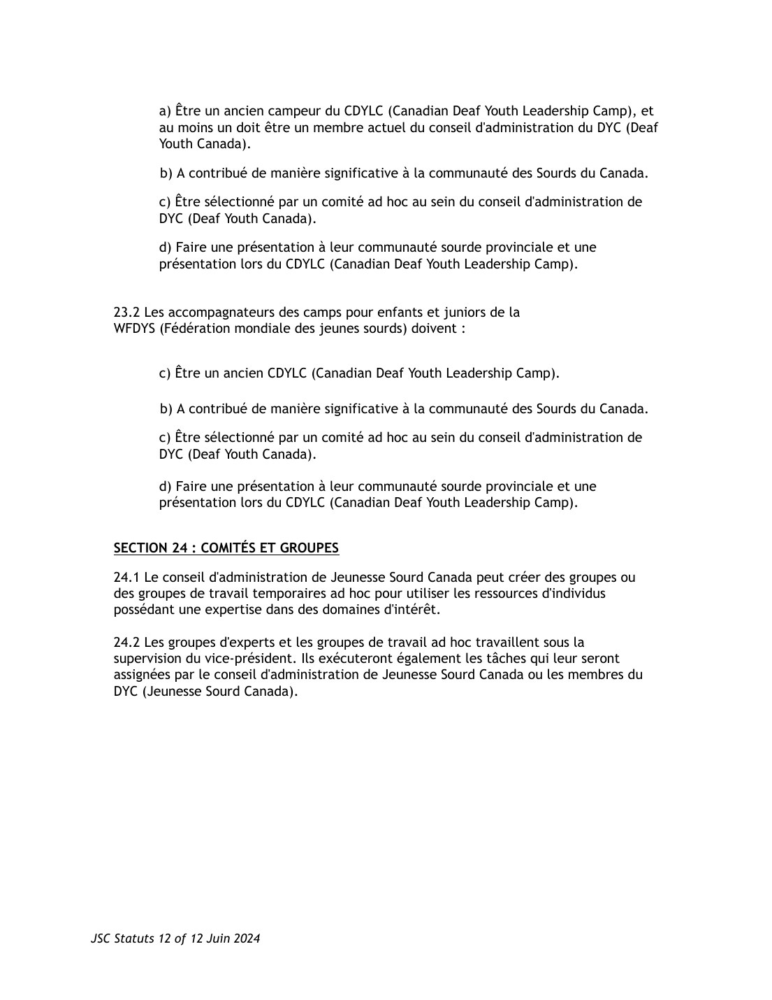
Lire le texte
Page 1
Jeunesse Sourd Canada STATUTS (Updated on June 30, 2024) JSC Statuts 1 of 12 Juin 2024
Page 2
TABLE DES MATIÈRES
Préambule .............................................................................page 3
ARTICLE I : NOM, LANGUES ET OBJECTIF .........................................3
Section 1 : Nom ................................................................................... 3
Section 2 : Langues ............................................................................... 3
Section 3 : But et Objectifs ..................................................................... 3
ARTICLE II : LE CONSEIL................................................................. 4
Section 4 : Conseil d'Administration .........................................................4-5
ARTICLE III : DEVOIRS DES ADMINISTRATEURS....................................... 5
Section 5 : Fonctions du Président ............................................................5
Section 6 : Fonctions du Vice-Président ................................................... 5-6
Section 7 : Fonctions du Secrétaire ........................................................... 6
Section 8 : Fonctions du Trésorier ............................................................6
Section 9 : Obligations du Directeur Créatif ....................................... 6-7
Article 10 : Fonctions du Directeur des Francophones ....................................7
Article 11 : Devoirs du Directeur Autochtone ......................................... 7-8
Section 12 : Fonctions du Directeur de Camp ..........................,.................... 8
Section 13 : Devoirs du Président Sortant ............................................... 8
ARTICLE IV : RÉUNION DU CONSEIL D'ADMINISTRATION........................... 8
Section 14 : Quorum et Réunion du Conseil d'Administration............................8-9
Section 15 : Procès-Verbaux des Réunions du Conseil d'Administration .................. 9
ARTICLE V : ASSEMBLÉE GÉNÉRALE DES JEUNES ET RÉUNION SPÉCIALE ......9
Section 16: Quorum et Réunion des Membres................................................ 9
Section 17: Procès-verbal du YGM.............................................................. 9
ARTICLE VI : POUVOIRS ................................................................10
Section 18: Droits des Membres .............................................................. 10
Section 19: Modification des Statuts ...................................................... 10
Section 20: Évaluation et Mesures Disciplinaires ........................................... 10
Section 21: Suspension et Résiliation ...................................................... 10
ARTICLE VII : COMITÉ AD HOC ........................................................11
Section 22: Camp de Leadership pour les Jeunes Sourds du Canada ................11-12
Section 23: Section des Jeunes de la Fédération Mondiale des Sourds.............. 11-12
Section 24: Comités et Groupes .............................................................. 12
JSC Statuts 2 of 12 Juin 2024
Page 3
PRÉAMBULE
La fondation de DYC (Deaf Youth Canada) a été initiée par les campeurs du CDYLC
(Canadian Deaf Youth Leadership Camp) de 2008. Les statuts de l'organisation ont été
adoptés lors de la première assemblée générale annuelle à Sylvan Lake, en Alberta, le
19 juillet 2008 et modifiés à Birken, en Colombie-Britannique, le 12 juillet 2010.
ARTICLE I: NOM, LANGUES ET OBJECTIF
SECTION 1: NOM
Les campeurs réunis lors d'une assemblée générale à Sylvan Lake, en Alberta, le 19
juillet 2008, ont voté pour unir tous les jeunes Sourds du Canada en une seule
association nationale appelée Deaf Youth Canada. Officieusement, l'association est
appelée DYC.
SECTION 2: LANGUES
Tous les supports écrits et visuels officiels doivent être présentés en anglais, en français,
en langue des signes américaine (ASL) et en langue des signes québécoise (LSQ).
SECTION 3 : BUT ET OBJECTIFS
3.1 DYC (Deaf Youth Canada) est organisé exclusivement à des fins caritatives, sociales
et éducatives pour les résidents sourds du Canada et les Canadiens âgés de 18 à 30 ans.
DYC (Deaf Youth Canada) poursuit les objectifs suivants:
3.2 Par les Jeunes: DYC (Deaf Youth Canada) est régi par les jeunes Sourds.
3.3 Pour les Jeunes: DYC (Deaf Youth Canada) favorise l'unification des jeunes Sourds
à travers le Canada en organisant et en stimulant l'échange d'informations et
d'expériences entre les jeunes Sourds.
3.4 À propos des Jeunes: DYC (Deaf Youth Canada) assure l'inclusion des jeunes Sourds
dans toutes les organisations et associations nationales et provinciales de et pour les
personnes Sourdes au Canada en s'associant avec des organisations et associations
nationales et provinciales pour les Sourds à travers le Canada.
JSC Statuts 3 of 12 Juin 2024
Page 4
ARTICLE II : LE CONSEIL
SECTION 4 : CONSEIL D'ADMINISTRATION
4.1 Les affaires de l'association sont gérées par un conseil d'administration composé
d'un maximum de neuf (9) administrateurs.
4.2 Les dirigeants qui composeront le Conseil seront :
a) Président
b) Vice-Président
c) Secrétaire
d) Trésorier
e) Directeur Créatif
f) Directeur de la Francophonie
g) Directeur Autochtone
h) Directeur de Camp
i) Président Sortant
4.3 Chaque administrateur doit être :
a) Sourd, malentendant, devenu sourd ou Sourd-Aveugle
b) Peut communiquer en ASL ou en LSQ, quelles que soient ses compétences en
matière de signature
c) Être citoyen ou résident canadien
d) Être âgé de 18 à 30 ans au moment de l'élection
e) Présent, ancien campeur ou membre du personnel à l'AGA (Assemblée générale
annuelle)
4.4 Il doit y avoir un maximum de trois (3) jeunes par province.
4.5 Chaque administrateur sera élu lors de l'assemblée générale annuelle de DYC
(Deaf Youth Canada) et voté par les membres de DYC (Deaf Youth Canada).
4.6 Le rôle de président sortant devient automatique lors de l'assemblée générale
annuelle lorsqu'un nouveau président est élu, quel que soit son âge.
JSC Statuts 4 of 12 Juin 2024
Page 5
4.7 Les anciens membres du conseil d'administration devraient travailler avec le
nouveau conseil d'administration pendant six (6) mois après l'élection pour assurer une
transition en douceur.
4.8 MANDAT : occuper le poste pour une durée de deux (2) ans. Nul ne peut occuper
plus d’une fonction. Ils ne peuvent pas briguer le même poste pendant des mandats
consécutifs.
ARTICLE III : DEVOIRS DES ADMINISTRATEURS
SECTION 5 : DEVOIRS DU PRÉSIDENT
5.1 Le président est le représentant principal de l'Association.
5.2 Suit, explique et protège les décisions du conseil d'administration auprès des
associations et du public.
5.3 Travailler en étroite collaboration avec les trois (3) collègues exécutifs du
conseil d'administration (vice-président, secrétaire et trésorier).
5.4 Lit et approuve tous les rapports supervisés par le vice-président.
5.5 Signe tous les documents officiels avec le secrétaire.
5.6 Signe tous les chèques approuvés avec le trésorier.
5.7 Assure les opérations au sein de l'association telles que déterminées par les
membres lors de l'assemblée générale annuelle.
5.8 Préside toutes les réunions de l'association et du conseil d'administration.
5.9 Assiste à toutes les réunions tenues par : l'Association des Sourds du Canada (ASC),
la Société culturelle canadienne des Sourds (CCDS) et l'Association des sports des Sourds
du Canada (ASSC) pour représenter les jeunes Sourds canadiens et s'assurer que leur
inclusion dans les activités et objectifs à long terme au Canada.
SECTION 6 : DEVOIRS DU VICE-PRÉSIDENT
6.1 En cas d'absence ou d'empêchement du Président, ses fonctions sont
exercées par le Vice-Président.
6.2 Le vice-président sera chargé des questions relatives aux règlements
administratifs et à la procédure parlementaire et donnera des conseils sur ces
questions au conseil d'administration ou aux membres du DYC lors de toute réunion.
6.3 Superviser tous les projets et rapports sous DYC (Deaf Youth Canada).
JSC Statuts 5 of 12 Juin 2024
Page 6
6.4 Avoir le pouvoir de signer les chèques avec le trésorier et le
président.
SECTION 7 : FONCTIONS DU SECRÉTAIRE
7.1 Le secrétaire est responsable de communiquer avec tous les membres et de
maintenir les dossiers et archives.
7.2 Gère les lettres, les courriels et toutes formes de correspondance.
7.3 Met à jour les coordonnées des membres.
7.4 Envoie les convocations, les procès-verbaux et les documents nécessaires.
7.5 Rédige les procès-verbaux et les transmet au conseil d'administration pour suivi.
7.6 S'assure que tous les documents officiels sont signés.
SECTION 8 : DEVOIRS DU TRÉSORIER
8.1 Le trésorier supervise et gère le budget, les revenus et les dépenses.
8.2 Tient un dossier détaillé de tous les états financiers, qui doivent être approuvés par
le vice-président et le secrétaire.
8.3 S'assure que les chèques approuvés sont signés par deux des trois membres autorisés
du conseil d'administration.
8.4 Prépare le rapport financier annuel et le soumet au conseil d'administration de DYC
(Deaf Youth Canada).
8.5 Travailler en étroite collaboration avec le trésorier sur tout comité ad hoc et
superviser leurs finances.
8.6 Effectuer les paiements dans un délai raisonnable.
8.7 Réclamer des remboursements si nécessaire.
8.8 Coordonne et gère les activités de collecte de fonds.
SECTION 9 : DEVOIRS DU DIRECTEUR DE CRÉATION
9.1 Le directeur créatif coordonne et gère le site Web, la newsletter, les
courriels et toutes les autres sources médiatiques.
9.2 S'assure que tous les documents sont exacts, mis à jour et accessibles.
JSC Statuts 6 of 12 Juin 2024
Page 7
9.3 Élabore et distribue des trousses d'information à tous les
représentants provinciaux.
9.4 Communique et assure la liaison avec les organisations aux niveaux national,
provincial et local.
9.5 Travailler en étroite collaboration avec le directeur autochtone ad hoc et le
directeur des francophones.
9.6 Fait la promotion de DYC (Deaf Youth Canada) et recrute des jeunes Sourds pour y
participer.
9.7 Tous les médias doivent être approuvés par le conseil d'administration du
DYC (Deaf Youth Canada) avant d'être rendus publics.
SECTION 10 : DEVOIRS DU DIRECTEUR DES FRANCOPHONES
10.1 Le directeur des francophones agit comme agent de liaison communautaire entre
le conseil d'administration du DYC (Deaf Youth Canada) et la communauté francophone
du Canada.
10.2 S'assure que tous les échanges d'informations et d'expériences sont entièrement
accessibles au conseil d'administration de DYC (Deaf Youth Canada) et à la
communauté francophone dans les deux langues – LSQ et français.
10.3 Coordonner toutes les traductions et interprétations.
10.4 Travailler en étroite collaboration avec le président, le secrétaire et le
directeur créatif.
SECTION 11 : DEVOIRS DU DIRECTEUR AUTOCHTONE
11.1 Le directeur autochtone défend les besoins et le point de vue des jeunes
autochtones sourds.
11.2 Favorise les relations et collabore avec les communautés autochtones de partout
au Canada pour promouvoir les objectifs et les initiatives de DYC (Deaf Youth Today)
auprès des jeunes autochtones sourds.
11.3 Travailler en collaboration avec d'autres directeurs, y compris le président, le
secrétaire, le trésorier, le directeur de la création et le directeur des francophones,
pour intégrer les perspectives autochtones et assurer l'inclusivité dans toutes les
activités du DYC (Deaf Youth Today).
11.4 Construit et entretient des réseaux avec des organisations, des dirigeants et des
parties prenantes autochtones pour améliorer la portée et l'impact de DYC (Deaf Youth
Today) au sein des communautés autochtones.
JSC Statuts 7 of 12 Juin 2024
Page 8
11.5 Fournit des mises à jour et des rapports réguliers au conseil d'administration du
DYC (Deaf Youth Canada) sur les jeunes autochtones sourds.
SECTION 12 : DEVOIRS DU DIRECTEUR DE CAMP
12.1 Le directeur du camp conçoit et développe le programme global du camp CDYLC
(Canadian Deaf Youth Leadership Camp), y compris des activités, des ateliers et des
événements qui alignent la mission et les objectifs du camp.
12.2 Recrute, embauche et établit un comité de camp pour collaborer à l'élaboration
des plans concernant le programme du camp.
12.3 Gère le processus d'inscription des campeurs, y compris l'inscription, les
formulaires de santé et la communication avec les campeurs concernant la logistique
et les attentes du camp.
12.4 Assurer le respect des règles de sécurité et mettre en œuvre des protocoles de
gestion des risques pour créer un environnement sécuritaire pour les campeurs et le
personnel.
12.5 Collabore avec le trésorier pour élaborer et gérer le budget du camp, y compris
les projections de revenus, le suivi des dépenses et les rapports financiers.
12.6 Collabore avec le directeur créatif pour élaborer et mettre en œuvre des
stratégies visant à promouvoir le camp et à attirer de nouveaux campeurs.
12.7 Assure le respect de toutes les réglementations locales, provinciales et nationales
liées aux opérations du camp, y compris les normes de santé et de sécurité, les
exigences en matière de permis et les lois sur le travail.
SECTION 13 : DEVOIRS DU PRÉSIDENT EXCÉDENT
13.1 Le président sortant agit à titre de conseiller auprès du conseil d'administration.
13.2 N'a pas de droit de vote et agit en tant que parlementaire à toutes les réunions
officielles du Conseil d'administration et à l'Assemblée générale de la jeunesse.
ARTICLE IV : RÉUNION DU CONSEIL D'ADMINISTRATION
SECTION 14 : QUORUM ET RÉUNION DU CONSEIL D'ADMINISTRATION
14.1 Le quorum aux assemblées générales du conseil d'administration est de 2/3 des
représentants votants du conseil d'administration.
14.2 Le Conseil d'administration se réunit au moins une fois tous les trois mois.
14.3 Le président supervisera les réunions et ne pourra voter que dans les
situations nécessitant un bris d'égalité.
JSC Statuts 8 of 12 Juin 2024
Page 9
14.4 Les motions doivent être soumises 48 heures avant la réunion.
14.5 L'ordre du jour doit être distribué 24 heures avant la réunion.
SECTION 15 : PROCÈS-VERBAL DES RÉUNIONS DU CONSEIL
15.1 Les procès-verbaux des réunions du Conseil sont rédigés et envoyés aux membres
du Conseil dans les 7 jours suivant chaque réunion. Dans les quatorze (14) jours suivant
la réception du procès-verbal, les membres du conseil d'administration feront part de
leurs réactions au président.
ARTICLE V : ASSEMBLÉE GÉNÉRALE DES JEUNES ET RÉUNION
SPÉCIALE
SECTION 16 : QUORUM ET ASSEMBLÉE DES MEMBRES
16.1 Toute Assemblée générale des jeunes (AJJ) ou réunion extraordinaire des membres
se tiendra à une heure et à un endroit déterminés par le conseil d'administration du DYC
(Deaf Youth Canada).
16.2 Le vote sur toute motion ou position doit être décidé à la majorité des voix,
avec au moins un minimum de 2/3 pour adopter toute motion ou position.
16.3 Le Président n'a pas de droit de vote aux réunions.
16.4 Tous les documents utilisés aux fins du vote doivent être détruits immédiatement
après la réunion.
16.5 Le président sortant agit en tant que modérateur pendant la partie électorale de
l'Assemblée générale des jeunes.
16.6 Si le président sortant n'est pas présent à l'Assemblée générale des jeunes, un
modérateur sera choisi par le conseil d'administration du DYC (Deaf Youth Canada) et
restera neutre pendant l'élection.
SECTION 17 : PROCÈS-VERBAL DE L'ASSEMBLÉE GÉNÉRALE DES JEUNES OU DES
RÉUNIONS SPÉCIALES
17.1 Le procès-verbal de l'Assemblée générale des jeunes ou de la réunion
extraordinaire sera rédigé et envoyé aux membres dans les trente (30) jours suivant
chaque réunion. Dans les trente (30) jours suivant la réception du procès-verbal, les
membres feront part de leurs réactions au Président.
JSC Statuts 9 of 12 Juin 2024
Page 10
ARTICLE VI : POUVOIRS
SECTION 18 : Droits des membres
18.1 Tous les membres de DYC (Deaf Youth Canada) ont le droit de s'exprimer et de
voter à l'Assemblée générale des jeunes.
SECTION 19 : MODIFICATION DES STATUTS
19.1 Les statuts ne peuvent être modifiés que lors de l'Assemblée générale des jeunes.
Toute proposition de modification des statuts doit être soumise au Conseil
d'Administration au moins un mois avant l'Assemblée Générale des Jeunes. Le président
rendra compte de tous les amendements proposés ainsi que des recommandations du
Conseil d'administration aux membres au moins deux semaines avant l'Assemblée
générale des jeunes.
19.2 Un vote majoritaire des deux tiers (2/3) des membres est requis pour
l'approbation des amendements proposés.
SECTION 20 : ÉVALUATION ET MESURES DISCIPLINAIRES
20.1 Tous les membres du conseil d'administration doivent signer un contrat lors de leur
première réunion pour déterminer la ou les mesures disciplinaires à prendre s'ils ne
remplissent pas leur rôle de membre du conseil d'administration. Le contrat peut être
rédigé et approuvé par le présent conseil d'administration.
SECTION 21 : SUSPENSION, CESSATION ET DÉMISSION
21.1 Si un membre du conseil d'administration est suspendu de ses fonctions, le
vice-président assume ses fonctions ou les assigne à un autre membre du conseil
d'administration pour la durée de la suspension. La durée de la suspension sera décidée
par le conseil d'administration, sans qu'elle puisse durer plus de trois (3) mois.
21.2 En cas de licenciement d'un membre du conseil d'administration, le
vice-président assume les fonctions de ce poste jusqu'à ce qu'il soit pourvu. Aucun
poste ne peut rester vacant plus de trois (3) mois.
21.3 Si un membre du conseil d'administration souhaite démissionner, il doit
soumettre une lettre de démission et continuer à siéger pendant un mois
avant de partir.
21.4 En cas de licenciement ou de démission, le membre remplaçant du conseil
d'administration sera considéré comme un membre intérimaire et n'aura pas de
pouvoir de signature.
JSC Statuts 10 of 12 Juin 2024
Page 11
ARTICLE VII : COMITÉ AD HOC
SECTION 22 : CAMP DE LEADERSHIP DES JEUNES SOURDS DU CANADA
22.1 Le CDYLC (Canadian Deaf Youth Leadership Camp) est un projet semestriel
supervisé et parrainé par DYC (Deaf Youth Canada) depuis 2008.
22.2 Le CDYLC (Canadian Deaf Youth Leadership Camp) doit avoir lieu tous les deux ans,
conformément à la date et à la province de la prochaine Conférence des Sourds du
Canada. En cas d'annulation de la Conférence des Sourds Canada, DYC (Deaf Youth
Canada) continuera, et le conseil d'administration de DYC (Deaf Youth Canada) et le
comité CDYLC (Canadian Deaf Youth Leadership Canada) décideront du lieu.
22.3 Les participants au camp doivent être :
a) Sourd, malentendant, devenu sourd ou Sourd-Aveugle
b) Être citoyen ou résident canadien
c) Peut communiquer en ASL ou LSQ quelles que soient ses compétences
en signature
d) Avoir entre 18 et 30 ans le PREMIER jour du camp
22.4 Le poste de directeur du camp CDYLC (Canadian Deaf Youth Leadership Camp)
doit être élu par les membres du DYC (Deaf Youth Canada) lors de l'YGA (Assemblée
générale des jeunes).
22.5 Le directeur de camp doit travailler en étroite collaboration avec le
vice-président et trésorier.
22.6 Tous les membres du comité du CDYLC (Canadian Deaf Youth Leadership Camp)
doivent adhérer aux lignes directrices du Canadian Deaf Youth Leadership Camp. Si un
membre du comité du CDYLC (Canadian Deaf Youth Leadership Camp) ne répond pas ou
n'accomplit pas les tâches assignées par le conseil d'administration ou le président dans
un délai de deux semaines sans préavis, il recevra un avertissement et sera expulsé
après un deuxième avertissement.
22.7 L'hôte de la Conférence des Sourds du Canada devrait offrir une inscription
gratuite aux participants du camp pour assister à la Conférence des Sourds du Canada,
qui a lieu juste après le camp. ** Tenez-le pour la réunion du conseil d'administration
SECTION 23 : SECTION DE LA FÉDÉRATION MONDIALE DES JEUNES
SOURDS
23.1 Les délégués au camp de jeunes de la WFDYS (Fédération
mondiale des jeunes sourds) doivent :
JSC Statuts 11 of 12 Juin 2024
Page 12
a) Être un ancien campeur du CDYLC (Canadian Deaf Youth Leadership Camp), et
au moins un doit être un membre actuel du conseil d'administration du DYC (Deaf
Youth Canada).
b) A contribué de manière significative à la communauté des Sourds du Canada.
c) Être sélectionné par un comité ad hoc au sein du conseil d'administration de
DYC (Deaf Youth Canada).
d) Faire une présentation à leur communauté sourde provinciale et une
présentation lors du CDYLC (Canadian Deaf Youth Leadership Camp).
23.2 Les accompagnateurs des camps pour enfants et juniors de la
WFDYS (Fédération mondiale des jeunes sourds) doivent :
c) Être un ancien CDYLC (Canadian Deaf Youth Leadership Camp).
b) A contribué de manière significative à la communauté des Sourds du Canada.
c) Être sélectionné par un comité ad hoc au sein du conseil d'administration de
DYC (Deaf Youth Canada).
d) Faire une présentation à leur communauté sourde provinciale et une
présentation lors du CDYLC (Canadian Deaf Youth Leadership Camp).
SECTION 24 : COMITÉS ET GROUPES
24.1 Le conseil d'administration de Jeunesse Sourd Canada peut créer des groupes ou
des groupes de travail temporaires ad hoc pour utiliser les ressources d'individus
possédant une expertise dans des domaines d'intérêt.
24.2 Les groupes d'experts et les groupes de travail ad hoc travaillent sous la
supervision du vice-président. Ils exécuteront également les tâches qui leur seront
assignées par le conseil d'administration de Jeunesse Sourd Canada ou les membres du
DYC (Jeunesse Sourd Canada).
JSC Statuts 12 of 12 Juin 2024